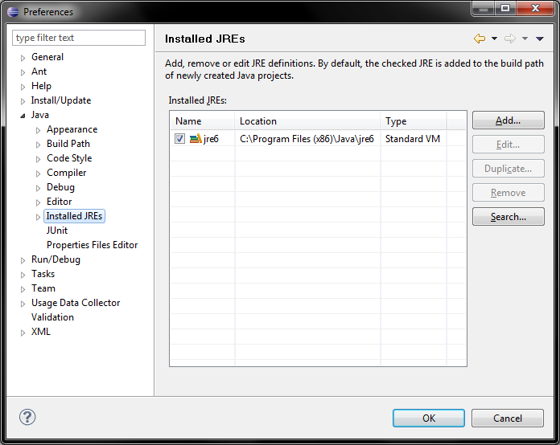
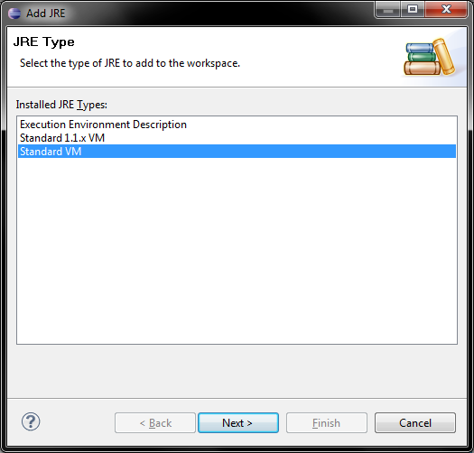
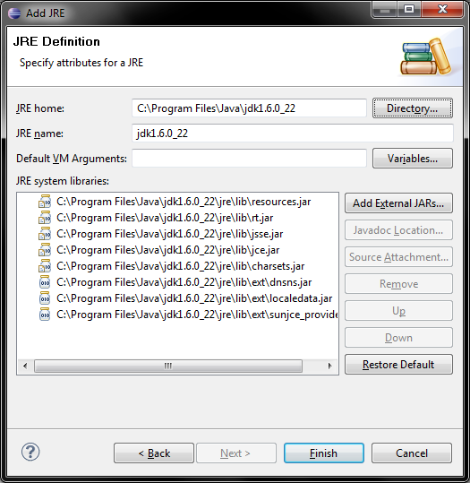
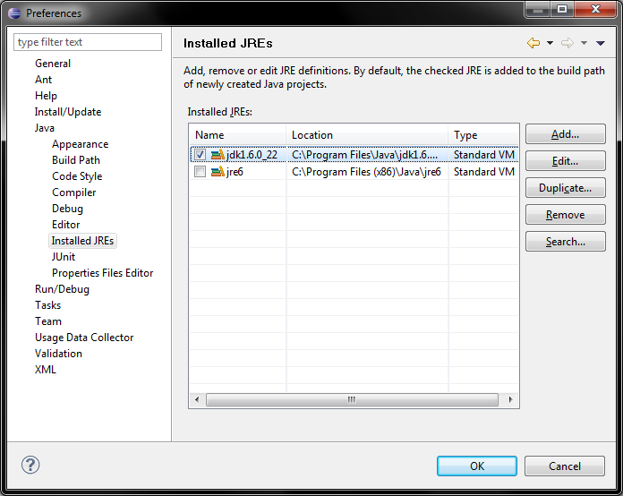

If you are a Linux or Windows user, Eclipse is not setup to use a JDK by default. To fix this, first make sure you have a JDK installed, then go to the Java->Installed JREs preference page.
Installed JREs Preference Page" width="696" height="554">Select "Add..." on the right, and you will be presented with the following dialog:
Select "Standard VM", then browse to the directory where the JDK is installed, and select it. The other fields in the dialog will auto-fill.
Once finished, the JDk will be added to the list of installed JREs. Make sure to select it as the active JRE. (This is not done by adding it, it is a separate step which is completed manually by checking teh box next to the JDK on the table)
